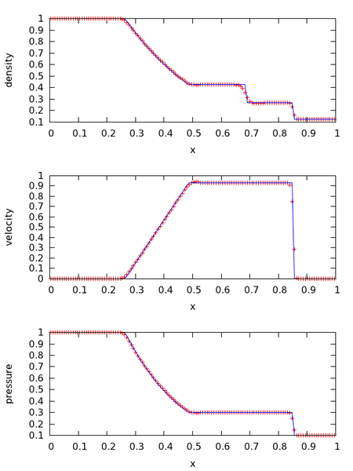

Michael Zingale (Stony Brook)

Figure 1. The Sod shock tube problem for a γ = 1.4 gas using the PPM solver with 128 zones at t = 0.2s. The solid line is the exact solution.
hydro1d is meant as a teaching code—written to help new Astronomy / Astrophysics undergraduate and graduate students come up to speed on the methods for solving the equations of hydrodynamics that are popular in our field.
hydro1d solves the compressible Euler equations in a finite-volume Godunov framework. A simple gamma-law gas is used. Slopes are reconstructed using piecewise constant (Godunov), piecewise linear, or piecewise parabolic (PPM) polynomials. The emphasis in the code is on readability and understanding the equations, so some steps are explicitly written out for clarity—performance is a secondary consideration.
The code is written in Fortran (using some elements of Fortran 2003 and 2008). The included makefile is setup for gfortran.
Some basic problems are supplied, including a shock-tube (in the sod/ directory), and simple advection (advect/) of a density pulse. The included README file explains how to get started.
Some notes on the piecewise linear and piecewise parabolic methods for the Euler equations are available here: CompHydroTutorial.pdf
For a 2-d hydrodynamics code (written mostly in python) written as a teaching code, see the pyro2 code webpage
If you are interested in a production 3-d hydrodymamics code that implements unsplit ppm, download the Castro Code
You can get hydro1d from github: hydro1d github page
The following references help explain the methods used. Some of these are multidimensional papers, but they explain the ideas behind the reconstruction well.
Leveque, R. J., "Finite Volume Methods for Hyperbolic Problems", 2002, Cambridge University Press.
You are welcome to use this code for any teaching purposes. Feedback and an acknowledgement would be appreciated.
Send any comments / bug fixes to: Michael.Zingale AT stonybrook.edu
Acknowledgements: MZ thanks Ann Almgren, John Bell, and Andy Nonaka for many helpful discussions over the years.